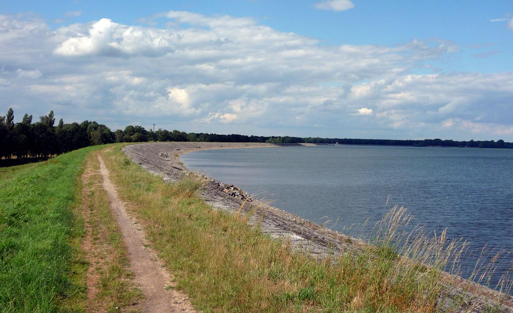

Zapraszamy na oficjalną stronę poświęconą naszej miejscowości — pełną historii, zdjęć i ciekawostek!
Nasza miejscowość ma bogatą i ciekawą historię sięgającą wieków wstecz. Tutaj znajdziesz opowieści o dawnych mieszkańcach, wydarzeniach i tradycjach, które kształtowały to miejsce.

Odwiedź Szczedrzyk i jego okolice! Wkrótce dodamy interaktywną mapę i więcej informacji o trasach spacerowych i miejscach wartych odwiedzenia.